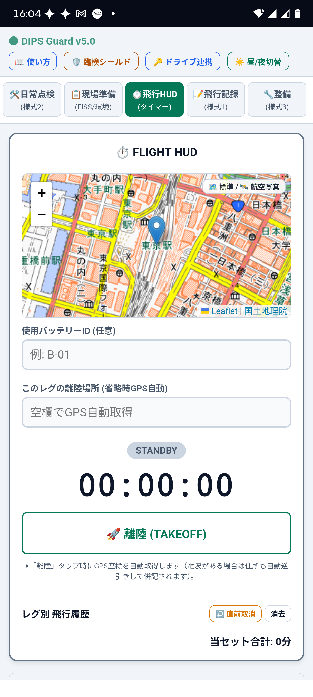
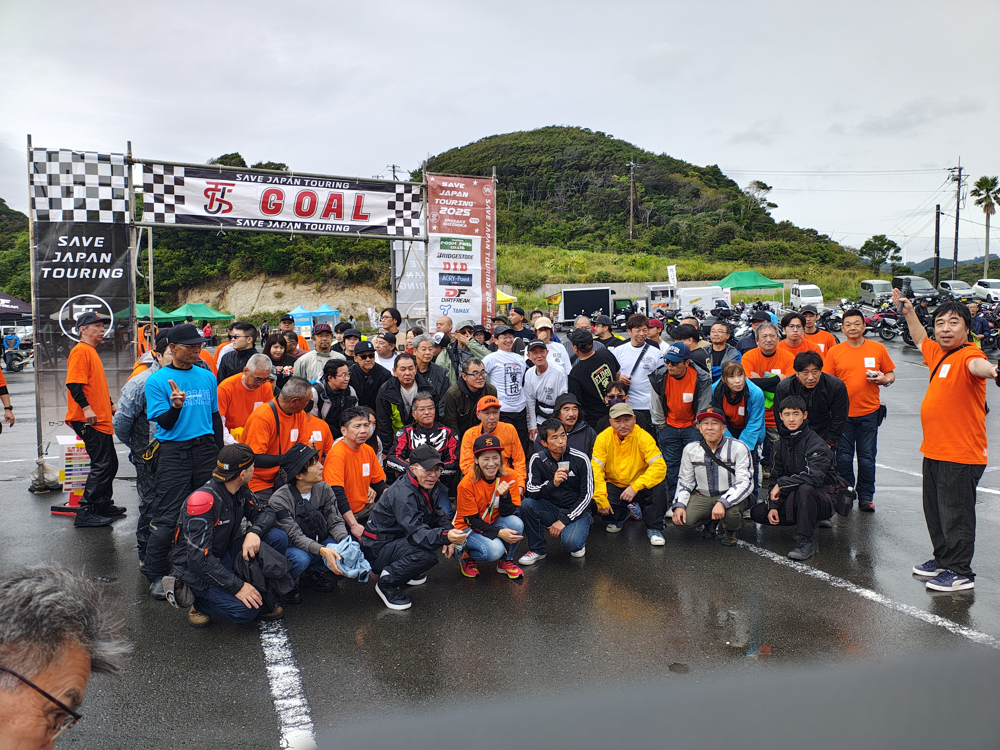
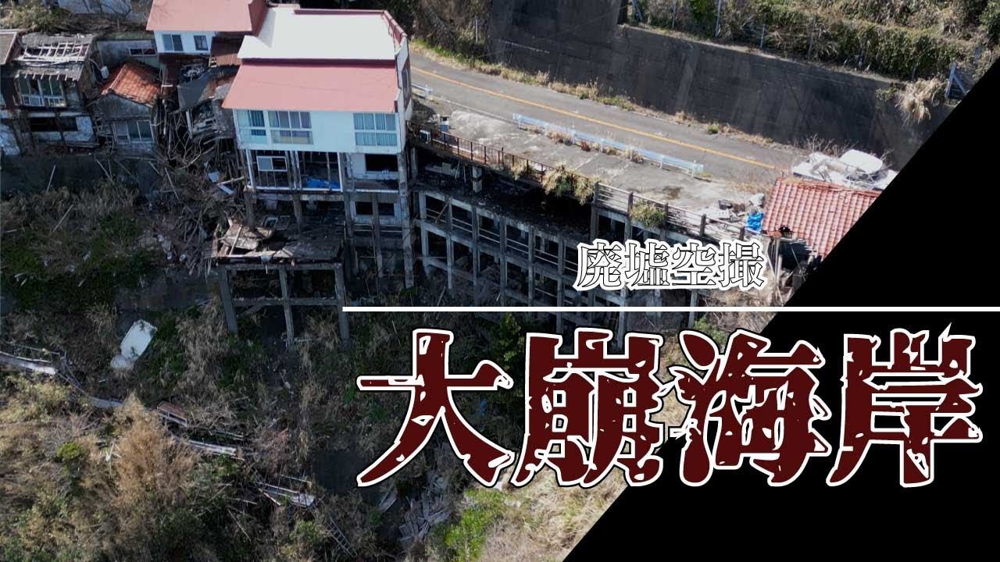
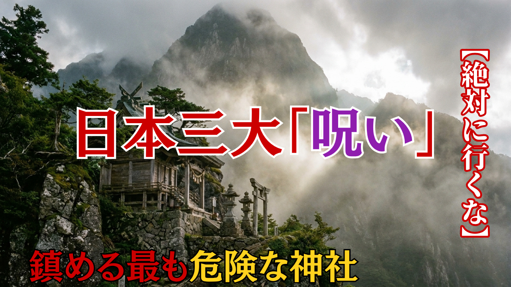
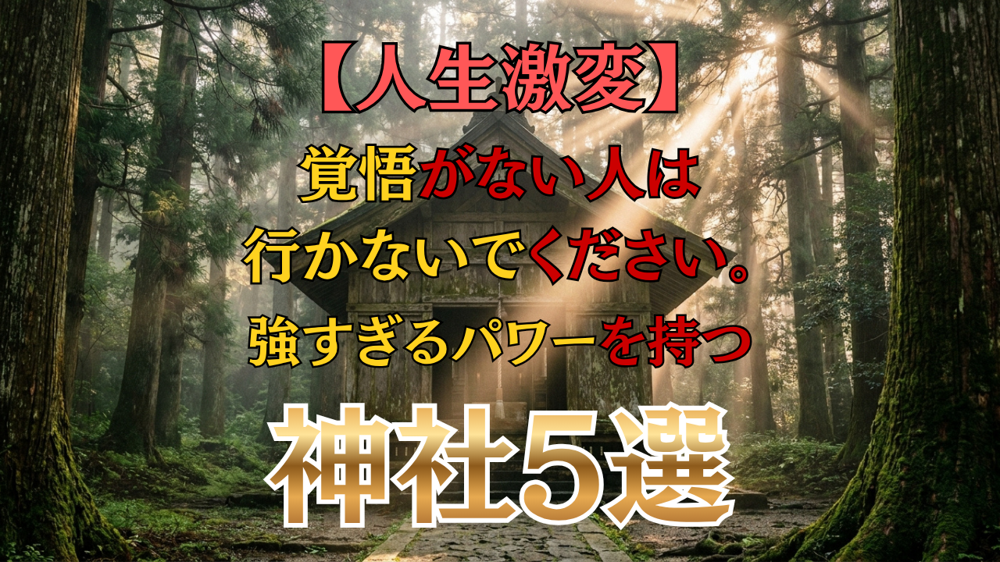
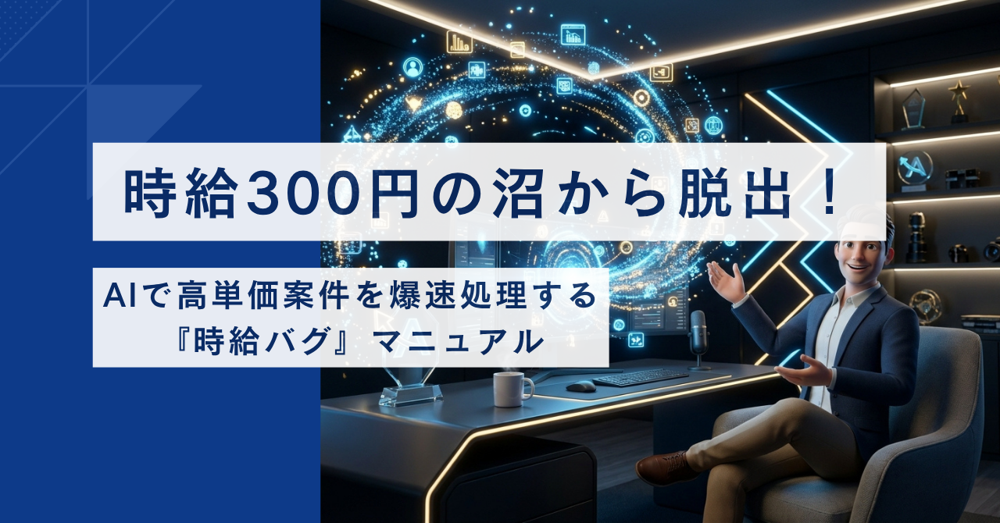

AI Full-stack Director Tadashi Sano
「最新の生成AIを実務フローに組み込み、
現場で実証された確かな精度とスピードで、実務の負担を極限まで削減する」
The Origin.
「AIツールが少し使えるだけの作業者ではありません」
富士フイルム
液晶フィルム製造品質管理
ハルシネーション（AI虚偽）を許さない厳格な品質管理（QA）の原点。
岳進塾
小中高生の学習指導
難解な専門知識や法改正を誰にでも直感的に伝える「超・翻訳力」の原点。
王子キノクロス
9年間の製造・工程改善
現場の泥臭い無駄を徹底的に排除する仕組み化の原点。
自律型ワークフロー
持続可能な仕組み化思想
「作業時間の切り売りから脱却し、パフォーマンスを最大化するために『手作業をゼロにし、AIに仕事を任せる』徹底した自動化思想を確立。」
Tech & Tools.
高品質・爆速を実現するスキルと技術スタック
AI / プロンプト設計
Gemini (Ultra/Adv.), Claude, ChatGPT, NotebookLM
高度なプロンプト設計・多段監査による成果物生成
動画 / 音声編集
Vrew, CapCut Pro, AI Voice Synthesis
※Adobe製品に依存しない爆速編集パイプライン
ドローン空撮 / 法務管理
DJI Mavic 3 Pro, DIPS 2.0 (国土交通省)
包括申請・催し場所上空申請などの難関法務の自社完結
デザイン / 自律型Web / SNS自動化
Tailwind CSS, Vanilla JS, Canva, Kubario
オフライン動作アプリ開発、一括マルチSNS自動配信
Pipeline.
手作業を極限まで減らす独自のAI自動化フロー
要件定義
ビジネス課題の本質抽出
独自プロンプト
最適化パラメーター設計
多角的なデータ検証・照合
ハルシネーションの徹底排除
実務品質での納品
実務に即投入できる確かな納品物
Featured Works.
ビジネス課題を解決に導くソリューション実績
不動産新旧データAI自動監査＆動画化
株式会社恩送り不動産 様：手動での物件データ確認をAI突合で行い工数を圧倒的に削減。

自律型Webアプリ開発 (最新実績)
『DIPS Flight Guard v5.0』及び『専勝寺夏祭りアプリ』。完全オフライン構築。

地方創生ツーリング SJT 運営統括・公式空撮
Save Japan Touring：難関ドローン法務クリア、企画・広報・空撮までの統合ディレクション実績。

YouTube運用 ＆ AI動画R&D
『夜凪の深夜タクシー』高回転運用、『杖つき男』4Kシネマ空撮。
Creative Gallery.
「視聴者のクリック率（CTR）を最大化する心理誘導デザイン」
サムネイル・バナー制作実績（AI画像生成・UI/UX最適化）
※自社運営メディアにおける、視聴維持率およびCTR最大化のためのA/Bテスト検証実績です。



Realities & Facts.
現場で実証された信頼性の高いパフォーマンス指標
Working Conditions
希望稼働条件・スタンス
Let's Accelerate.
「ビジネスを加速させるための『最も合理的な選択』です」